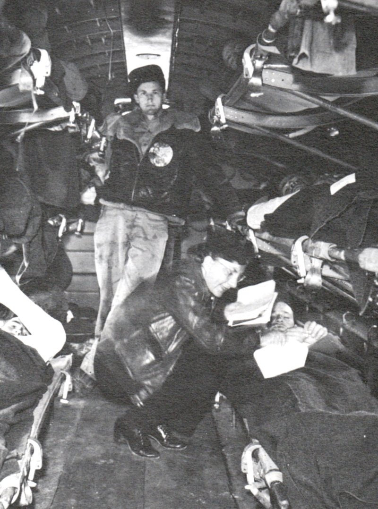

She flew into six campaigns aboard planes that bore no red cross — and brought more than 3,500 wounded men out of the war alive.

Aleda Ester Lutz was born in November 1915 in Freeland, Michigan, the youngest of ten children of German immigrants Friederich and Margaretha Lutz. She grew up on the family farm speaking both German and English, graduated from Saginaw's Arthur Hill High School in 1933, and loved tennis, dancing, and ice skating.
Service ran in the family. One brother served in the First World War; another would serve in the medical division in the Second. Aleda chose nursing — graduating from the Saginaw General Hospital School of Nursing and going to work as a staff nurse there. She had found her calling: caring for people at their most vulnerable.
In February 1942, two months after Pearl Harbor, she joined the Army Nurse Corps as a second lieutenant and was posted to the station hospital at Selfridge Field, Michigan. It was safe, necessary work. She volunteered for something harder.
The Army was building a new kind of unit: flight nurses who would ride into combat zones aboard transport planes and fly the wounded out. Few nurses qualified. Lutz did, joining the 802nd Medical Air Evacuation Transport Squadron. Her unit was rushed to North Africa before its training was even finished.
The C-47 transports she flew in bore no Red Cross markings. Every flight was a combat flight.
For twenty months she flew through six campaigns, from Tunisia to Sicily to Italy and into southern France. At Anzio, where Allied troops were pinned on a narrow beachhead under constant German artillery, she landed on the flight strip four times in a single day — under shellfire — to bring the wounded out.
By the fall of 1944 she had flown 196 evacuation missions and 814 combat hours, and cared for more than 3,500 patients in the air — more than any other flight nurse of the war.
On November 1, 1944, Lt. Lutz boarded a C-47 at Lyon, France, to carry fifteen wounded men to a hospital in Italy. Nine were American soldiers. Six were German prisoners of war. To the daughter of German immigrants — whose family back home ministered to German prisoners held near Freeland — every one of them was simply a patient.
The plane flew into a violent storm and crashed on the slopes of Mont Pilat near Saint-Chamond. There were no survivors. Aleda Lutz was 28 years old.
In December 1944 she was awarded the Distinguished Flying Cross — the first Army nurse of World War II to receive it — along with the Air Medal with four Oak Leaf Clusters and the Purple Heart. The Army named a hospital ship in her honor, the USAHS Aleda E. Lutz, which carried wounded soldiers home from Europe.
She rests with full military honors at the Rhone American Cemetery in Draguignan, France — the only woman buried there. Back home in Michigan, the Saginaw VA Medical Center bears her name, still caring for veterans every day.
She carried more than 3,500 men out of the war.
On her last flight, she carried her enemies too.